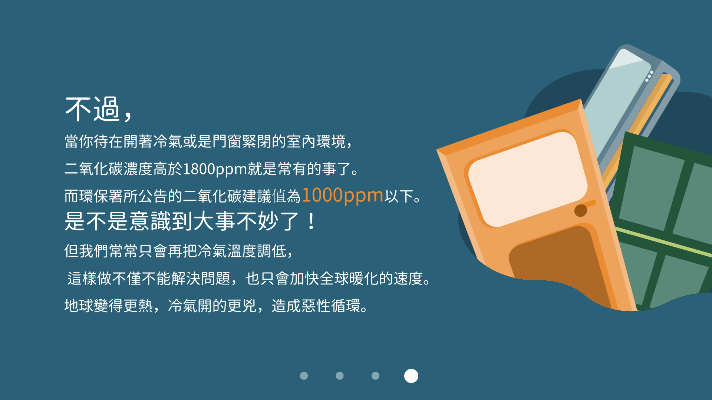
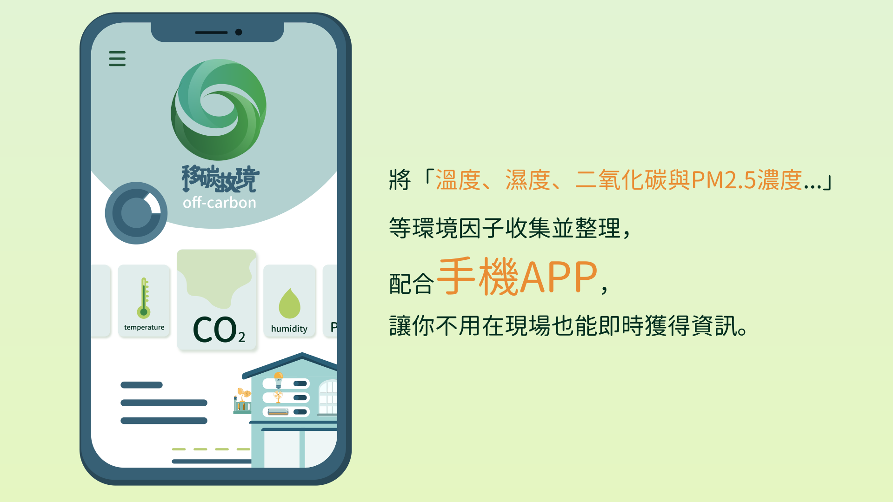

你，
會不會常常覺得

在電影院、教室、辦公室、補習班、連假前的火車裡，
待久了會覺得想睡覺、頭暈甚至身體不適
就算冷氣調低也不能提升活力

經過我們小小的調查，
發現主要是二氧化碳在作怪。
像『災難』提到室內二氧化碳濃度過高，
會引發大大小小的身體不適。
小則頭暈想睡，
嚴重時甚至會嚴重性腦損傷、缺氧、昏迷或死亡，
但這屬於超級極端，僅供參考。



不過，
當你待在開著冷氣或是門窗緊閉的室內環境，
二氧化碳濃度高於1800ppm就是常有的事了。
而環保署所公告的二氧化碳建議值為 1000ppm以下。
是不是意識到大事不妙了！
但我們常常只會在把冷氣溫度調低，
這樣做不僅不能解決問題，也只會加快全球暖化的速度。
地球變得更熱，冷氣開得更兇，造成惡性循環。

在這樣的情況下，
最好的方式是打開窗戶讓空氣流通，
但我們要怎麼意識到該Go Go開窗了呢？
我們有個點子

我們把這樣的構想
以「環境監測儀」
做為一個實現的方式

將「溫度、濕度、二氧化碳與PM2.5濃度…」
等環境因子收集並整理，
配合手機APP，
讓你不用在現場也能即時獲得資訊。
希望未來透過結合IOT家電
用綠能的方式降低環境的負擔，

並在手機APP中結合一些令人振奮的提示作為獎勵機制，
透過計算不同行為所產生的的二氧化碳，
提供使用者以更好的方式提升室內空氣品質，同時減少碳排量。
給予地球喘息的空間
共創美好未來。